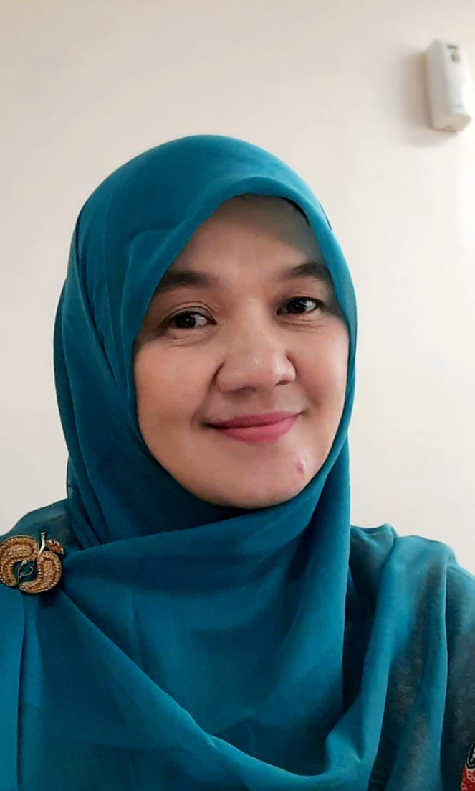

DOSEN PEMBIMBING
 |
Dr. Khuriyah, S.Ag., M.Pd. |
Nama lengkap beliau adalah Dr. Khuriyah, S.Ag., M.Pd. Beliau lahir di Banyumas, tanggal 15 Desember 1973. Beliau merupakan dosen di Universitas Islam Negeri Raden Mas Sa'id Surakarta yang beralamat di Jl. Pandawa, Dusun IV, Pucangan, Kec. Kartasura, Kabupaten Sukoharjo, Jawa Tengah 57168. Riwayat Pendidikan Beliau :
- S1: IAIN SUNAN KALIJAGA YOGYAKARTA dengan bidang ilmu Pendidikan Agama Islam
- S2: Universitas Negeri Yogyakarta dengan bidang ilmu Peneliti dan Evaluasi Pendidikan
- S3: Universitas Negeri Yogyakarta dengan bidang ilmu Penelitian Evaluasi Pendidikan
Keahlian beliau dalam bidang Metodologi Penelitian dan Pembelajaran PAI